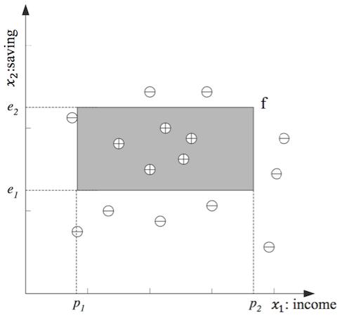

機器學習(Machine Learning)1：Introduction
Posted on March 21, 2017
1.什麼是機器學習？
⟪Machine learning is programming computers to optimize a performance criterion using example data or past experience.⟫ 廣義來說，機器學習是一門使計算機能自動學習，利用資料或經驗去優化一個目標的表現。光從字面上的理解有點抽象。明確來說，機器學習就是從大量的數據中，依目的選定適當學習方法下，自動找出數據內潛在的規律。憑這些規律達到預測未來(沒看過) 的資料。簡單來說，就是讓機器學習現有的資料，然後預測新的資料。
2.為什麼機器學習？
試想如果要寫一個排序亂數數列的系統，由大到小排列(sorting)，我們要如何寫？ google一下，就會發現有好幾種演算法能解決這個問題（氣泡排序、選擇排序、插入排序等）;那如果現在要寫一個樹的辨識系統，我們也能找到相對應的演算法，直接寫出程式碼分辨出樹嗎？當然有一種方法是列出幾百或幾千條規則，告訴電腦樹該長啥樣，但萬一漏了一條規則就辨識失敗了，而且顯得效率低落。讓我們想想我們是如何分辨樹的，為什麼我們能輕易地在一張圖中認出樹，而不會認成石頭？我們從小到大依據書本上或是生活中的經驗知道什麼是樹，累積這些經驗到記憶裡，然後總結出某種規律， 所以我們能輕易地分辨出樹。 反觀樹的辨識系統，我們能把我們分辨樹的經驗準則明確的告訴電腦嗎？看起來應該很困難，因為我們自己也無法明確解釋自己是怎麼分辨樹的。這時候，就可以使用機器學習。機器學習其實就是對人類學習過程的一種模擬，由上例可歸納出機器學習使用時機：1.目標函數(target function)無法直接被定義 2.資料量夠大且存在某種潛藏規律(underlying pattern)
3.如何機器學習？
我們舉銀行核發信用卡為例，信用卡一般會以分期方式付款，銀行通常會透過客戶過去的資料評估是否有能力償還卡債，而整個評估的流程稱為信用評分(Credit Scoring, Hand 1998)，可能採取的考量有年收入,存款,職業,年齡等。而我們的目的是想利用這些歷史資料，幫我們決定未來的顧客是否核發信用卡。 首先，x跟y代表銀行的歷史紀錄，x是銀行評估客戶的項目，代表資料的特徵，所以又稱feature space ;y是預測目標，代表顧客是否有拿到信用卡，通常稱為label。我們的目的就是找到一個“目標函式”（target function)，當丟進客戶的特徵(x)後，就能判別是否發卡(y)。 假設銀行員已透過經驗決定年收入(x1)和存款(x2)是判斷的依據， 那我們的X可以表示為 `cc x=[[cc x1],[cc x2]]` 而我們的預測目標y，假設通過發卡為正，不通過為負 `cc y`=`{[cc +，cc(approval)],[cc -，cc(rejection)]}` 最後我們的訓練資料(training example)，D，可以表示成 ` D={cc x_t,cc y_t}_(t=1)^n` 最後我們把D用一個二維的座標系統表示，而其相對應的位置(x1,x2)標記上預測目標y(+或-) ，如下圖，則經過剛剛的假設，我們可以預期年收入(x1)跟存款(x2)將會落在一個範圍內:(p1 ≤ income ≤ p2) AND (e1 ≤ saving ≤ e2) 以上這個式子就是我們要解的目標函數(target function)的“表示形式”，這個表現形式中所有可能的解稱為hypothesis set，而我們要求的f就是下圖矩形的區域，接下來利用演算法從hypothesis set中找到最適當的解g，就是找到一組最適合參數(p1,p2,e1,e2)，來逼近我們的f。然而真實情況下，這個f我們並不知道，我們只能從已知的資料D中，去找出離這組資D料失誤最小的那組參數，最後當作目標函數(target function)來使用。 
4.總結
由以上這個例子，我們來歸納一下機器學習的整個流程，如下圖。 1.對資料進行特徵萃取(feature extraction)，決定我們要輸入什麼x; 還有標記資料的預測目標(label)，就是以下的y，這個步驟算是處理訓練資料的前置作業，產生D。 2.根據我們的目的，利用萃取出資料的特徵x，來建立目標函數(target function)的模型，而目標函數的解集合就是hypothesis set。 3.再利用演算法找出目標函數學習模型的參數，就是從hypothesis set中挑出最符合資料D的解，最後讓這個解當作我們的f。